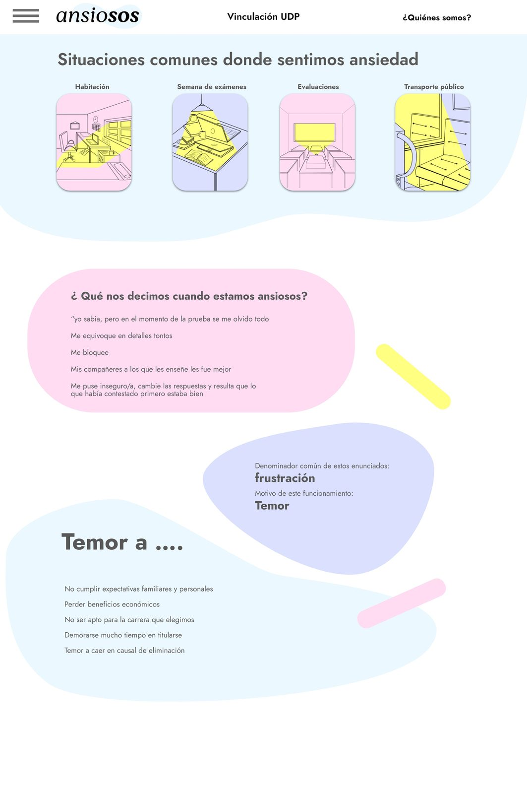
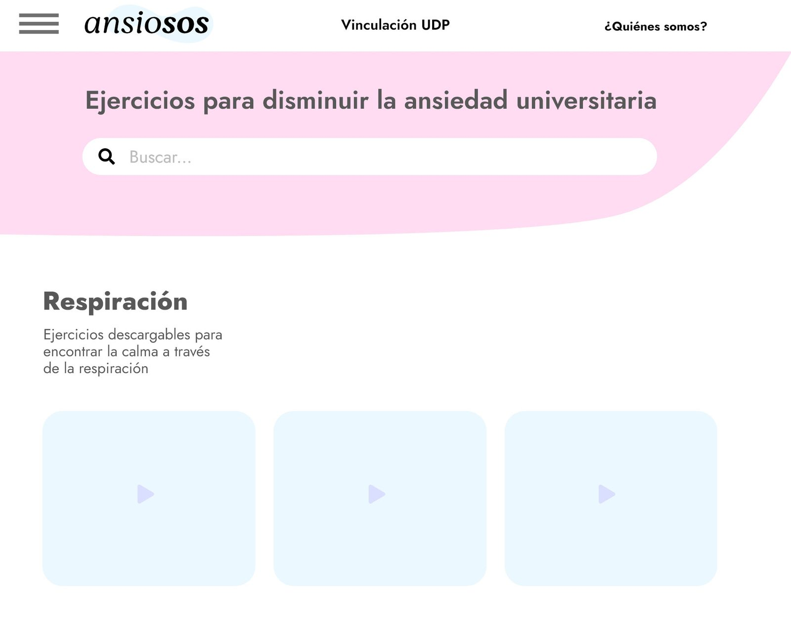
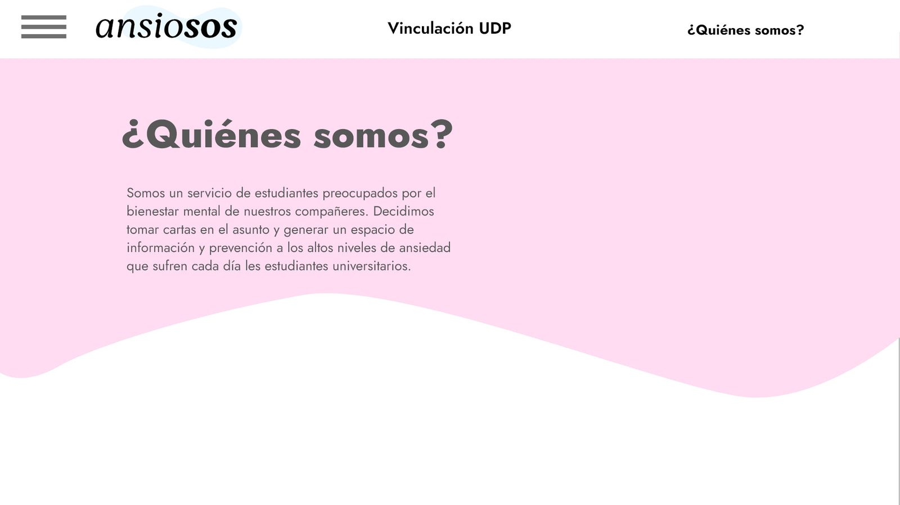
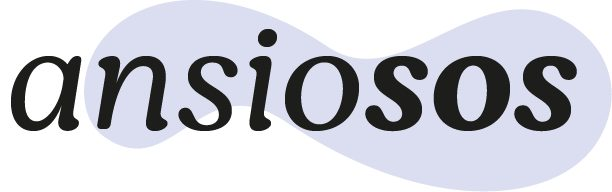

AnsioSOS: proyecto de título
Proyecto de título: plataforma psicoeducativa para manejar la ansiedad en los primeros años de universidad, complementaria al servicio de atención psicológica de la UDP.

Ficha
- Proyecto de título, Diseño Industrial UDP
- Profesora guía: Florencia Adriasola
- Colaboradora: Camila Correa
- Enero de 2021
El problema
Los altos niveles de ansiedad durante la primera etapa universitaria producen efectos dañinos en la salud mental y repercuten negativamente en el rendimiento académico. El servicio de atención psicológica de la universidad existe, pero atiende por hora agendada: entre que aparece el síntoma y llega la atención hay un espacio que nadie cubre.
La propuesta
Una plataforma digital interactiva complementaria al servicio de atención psicológica de la UDP, con actividades psicoeducativas para manejar los síntomas de la ansiedad de manera inmediata y desde cualquier lugar. El objetivo no es reemplazar la atención profesional sino potenciarla, incentivando el autoconocimiento gradual, la relajación y la planificación del tiempo.
{kind=link}

{kind=link}

{kind=link}

{kind=link}

Cinco años después
En 2026 retomé esta memoria y la convertí en una aplicación real, construida con IA. Está en este mismo catálogo como AnsioSOS: el proyecto de título es su origen.